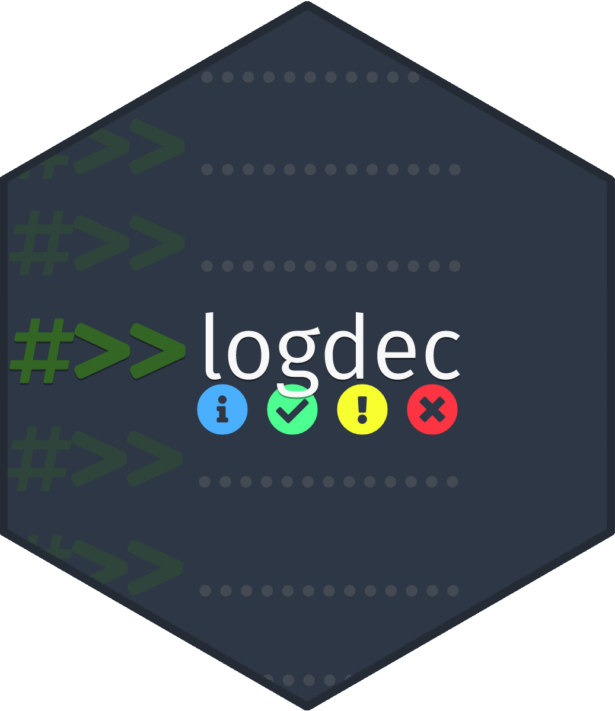
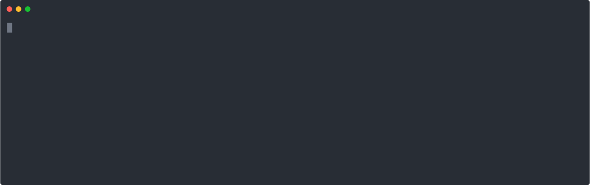

logdec - Verbosity using comments 
Installation
You can install the development version from GitHub using pak or remotes:
# With `pak`
pak::pkg_install("program--/logdec")
# With `remotes`
remotes::install_github("program--/logdec")Usage
You can start using logdec quickly by adding logdec::output() to the top of your .R file. Then, start adding comments using the #>> tag. Once your logdec comments are in place, you can source the file as normal! Below is a clear example of how logdec functions:
# example.R
options(logdec.engine = "cli")
logdec::output()
#>> Hello from {.pkg logdec}!
Sys.sleep(3)
#>> @info {.strong logdec} allows you to create output messages {cli::col_blue(\"directly\")} from comments!
Sys.sleep(3)
#>> @info All you need to do is install {.strong logdec}, then call {.fn logdec::output} at the top of your R file.
Sys.sleep(3)
#>> @info You can even use glue to pass variables to your comments! Here's some random value from {.fn rnorm}: {.val {rnorm(1)}}
Sys.sleep(3)
#>> @warning However, there are {cli::col_yellow(\"some limitations\")}, such as with console and package development use.
Sys.sleep(3)
#>> @success There are ways to work around this though, such as with the {.code %>>%} operator though!
Sys.sleep(3)
#>> Make your code output a bit easier to manage, with {.pkg logdec}! {cli::col_red(cli::symbol$heart)}
If you notice, at the top of example.R, you can set the logdec.engine option to one of the support engines. You can list all engines by calling:
logdec::list_engines()
#> [1] "base" "cli" "logger"Limitations
Since logdec attempts to read a file for specific comments, console/interactive use is not available. However, to work around this issue, logdec includes an extraction operator (%>>%). This operator works in either the conventional operator style, or in a functional style. See below for an example:
options(logdec.engine = "cli")
library(logdec)
# Conventional Use:
# --------------------
"@info" %>>% "Output some form of informational message"
#> ℹ Output some form of informational message
"" %>>% "This will also work, but is a bit odd"
#> → This will also work, but is a bit odd
# Functional Use:
# --------------------
`%>>%`("@success Successfully outputted this!")
#> ✔ Successfully outputted this!
`%>>%`("@success", "Outputted again!")
#> ✔ Outputted again!